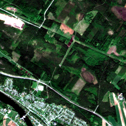
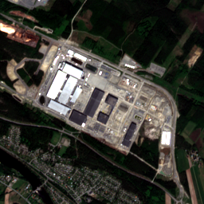
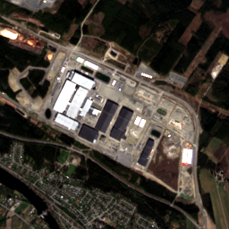

Northvolt Ett: Industrial Site Screening
InquiryDid Northvolt Ett show meaningful visible or spectral site transformation from early Sentinel-2 baseline imagery to its recent industrial footprint, and did the site remain visually stable from 2024 to 2025?



Finding
The original 2016 Sentinel-2 tile was blank/all-zero and has been retired from this report. Using a valid 2017 baseline, the broad 2.56 km Clay embedding comparison indicates minor embedding change between 2017 and 2025.
The RGB previews still provide useful visual context for site development, but the Clay score should be read cautiously: the facility footprint is only part of the wider tile, so broad-tile embeddings can understate localized industrial construction.
Within the later comparison window, the 2024 and 2025 embeddings remain highly similar. This supports a narrower claim of visual/spectral stability after the main industrial footprint is visible.
Comparison Table
| Interval | Cosine similarity | L2 distance | Interpretation |
|---|---|---|---|
| 2017 to 2025 | 0.9304 | 1.6063 | Minor embedding change |
| 2018 to 2025 | 0.9262 | 1.6339 | Minor embedding change |
| June 2024 to July 2024 | 0.9971 | 0.3239 | No meaningful change |
| June 2024 to May 2025 | 0.9937 | 0.4781 | No meaningful change |
Limitations
This report only assesses visible and spectral change in Sentinel-2 imagery using Clay v1.5 embeddings. It does not prove factory output, employment, financial status, production levels, emissions, energy use, or internal operational conditions.